“No sé cuánto me va a costar de verdad.”
En Dental Medics: nuestras tarifas están publicadas en la web y el presupuesto es cerrado. Sin costes ocultos ni sorpresas finales.
Seamos sinceros
Y cómo lo resolvemos en Dental Medics.
“No sé cuánto me va a costar de verdad.”
En Dental Medics: nuestras tarifas están publicadas en la web y el presupuesto es cerrado. Sin costes ocultos ni sorpresas finales.
“Me da miedo que me duela.”
En Dental Medics: anestesia eficaz y técnicas mínimamente invasivas. Buscamos siempre tu máxima comodidad.
“No quiero una franquicia.”
En Dental Medics: somos una clínica independiente y familiar: padres e hijos atendemos personalmente con criterios 100 % clínicos.
Oferta limitada a este mes
Antes de decidir nada, mira tu hueso en 3D y conoce el precio exacto de tus implantes. El TAC, gratis este mes.
Quedan 12 plazas en este mes
Oferta limitada al mes en curso, para pacientes que vayan a valorar un tratamiento de implantes.
Tu tranquilidad, por escrito
Consulta las tarifas de todos nuestros tratamientos antes de venir. Información clara y transparente.
Te mostramos cada detalle desde el primer día. Sin costes ocultos.
Anestesia eficaz y técnicas avanzadas para tu máxima comodidad.
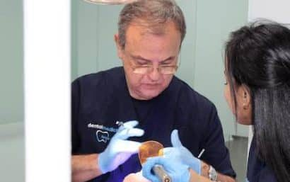
Una clínica de familia desde 1984
“Padres e hijos atendemos personalmente, con criterios 100 % clínicos.”Dr. Francisco Ferrer · Director
Dental Medics nació en 1984 bajo la dirección del Dr. Francisco Ferrer. Hoy sus hijos, el Dr. Jorge y la Dra. Paloma Ferrer, continúan la clínica en Chamberí y en Murcia, especializados en implantes y ortodoncia Invisalign.
Pedir cita con el equipo Ferrer →Tratamientos
Especializados en implantes dentales y ortodoncia Invisalign, con todas las especialidades.
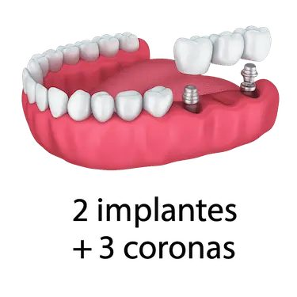
Tipos de implantes, proceso paso a paso, precios y garantías. Con casos reales.
Quiero valorar mi caso →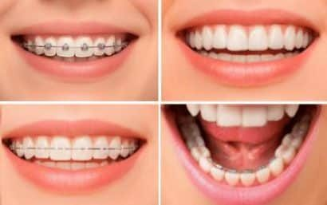
Brackets y ortodoncia invisible, con precios y resultados reales.
Quiero valorar mi caso →Dientes fijos sobre implantes, estables y cómodos.
Reservar valoración →Forma, color y armonía de la sonrisa.
Reservar valoración →Tratamiento y mantenimiento personalizado de encías.
Reservar valoración →Envíanos tu caso con tus imágenes y recibe un coste estimado.
Reservar valoración →Casos reales de la clínica
Casos reales de implantes y prótesis de Dental Medics Dr. Ferrer.
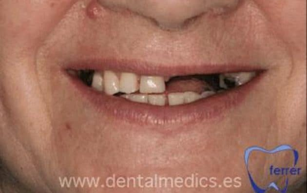
Antes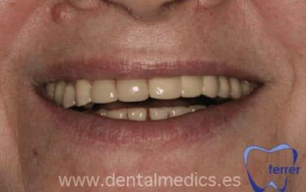
Después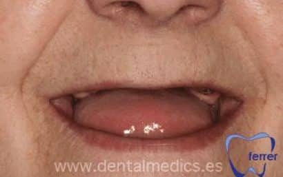
Antes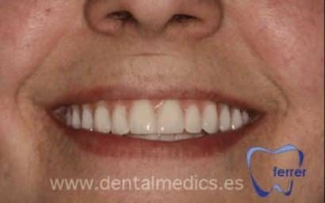
Después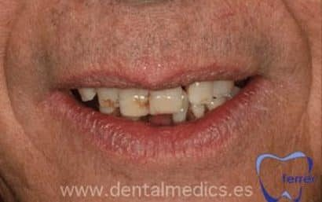
Antes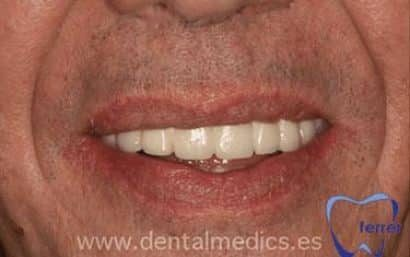
DespuésQuién te va a atender
El Dr. Francisco Ferrer y sus hijos, junto a un equipo de odontólogas especializadas.
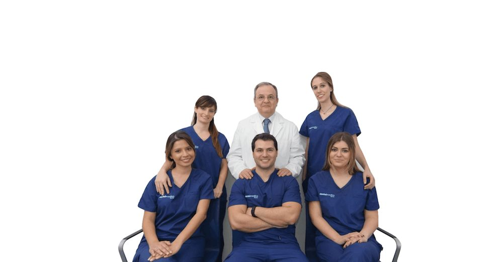
Médico estomatólogo · Director
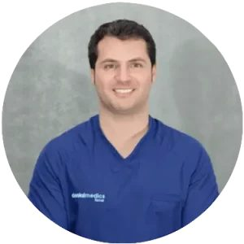
Implantología y cirugía oral
Implantología y ortodoncia
Conservadora y estética
Conservadora y estética
Así de fácil
Elige día y hora online o llámanos. Te confirmamos la cita por teléfono.
TAC 3D y valoración con el implantólogo. Te enseñamos tu hueso en pantalla y el precio exacto.
Te llevas tu plan por escrito con el precio total y la cuota mensual. Sin presión y sin letra pequeña.
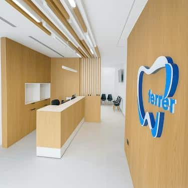
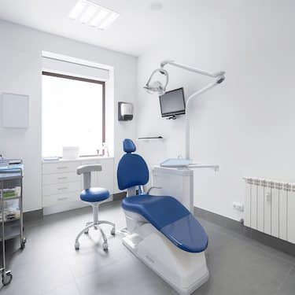
La clínica
Junto a Cuatro Caminos y Ríos Rosas, una zona céntrica y muy bien comunicada.
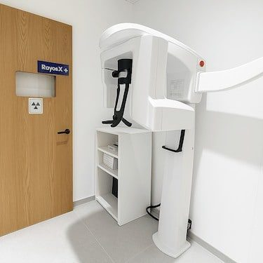
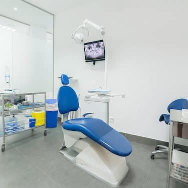
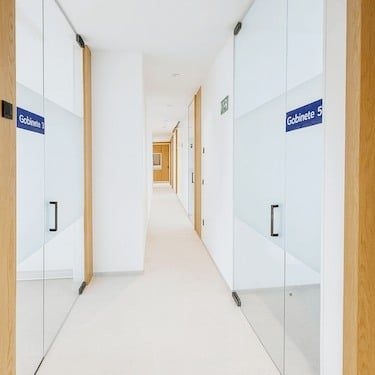
Financiación
Que el dinero no sea la razón para posponer tu salud. Calcula aquí cuánto pagarías al mes y en tu primera visita te damos la cifra exacta.
Financiación sujeta a aprobación de la entidad financiera. Cálculo orientativo sin intereses.
Opiniones reales
“Desde hace tres años voy con mi hija de 10 años y tanto la profesionalidad como el trato de todo el equipo médico es excelente. A mis padres les pusieron implantes y el resultado fue magnífico.”
“La clínica del Dr. Ferrer y sus hijos es excepcional. No puedo estar más feliz de haber encontrado un equipo familiar que realmente se preocupa por tu salud dental.”
“Acudí a la consulta porque necesitaba implantes dentales en las muelas y desde que llegué a la clínica me hicieron sentir cómoda y en confianza.”
Preguntas frecuentes
¿Tienes otra duda? Llámanos al 91 441 80 42 y te la resolvemos en un minuto.
Sí, este mes el TAC dental para implantes (valorado en 120 €) es gratuito para pacientes que vengan a valorar un tratamiento de implantes.
Publicamos las tarifas de todos nuestros tratamientos. En la valoración te damos el presupuesto cerrado de tu caso.
No. Te llevas tu plan y tu presupuesto por escrito y decides tú, cuando quieras. Sin llamadas insistentes.
Sí. Ofrecemos financiación, sujeta a aprobación. En la primera visita te calculamos tu cuota exacta.
Atendemos con cita previa. Puedes elegir día y hora directamente en esta web y te llamamos para confirmarla.
Reserva online · 1 minuto
Quedan 12 plazas en este mes
Horario: con cita previa
¿Prefieres llamar? 91 441 80 42
Horario online
Horario actualizado en tiempo real (hora de Madrid). Y aunque estemos cerrados, puedes reservar tu cita online las 24 horas: te la confirmamos en cuanto abramos.
Festivos nacionales cerrado. Citas con cita previa.
Dónde estamos
Antes de irte
TAC dental 3D (valor 120 €) y valoración con el implantólogo. Oferta limitada: quedan 10 plazas.
Sí, quiero mi plaza